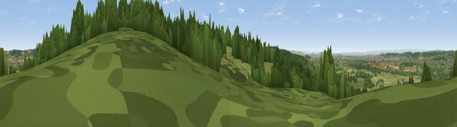

Viewpoint near Backwell
#8508 in England · top 14% of its area beats it · near BackwellWhere it is
The exact computed spot (ST 48462 67325). Click the marker for map links.
The view, rendered

A 360° render of this exact spot computed from the terrain model, tree cover and land cover — summer colours, afternoon light, calibrated against photographs of famous viewpoints. Real trees, hedges and buildings will differ in detail.
The panorama
Grey silhouette: terrain skyline in each direction (720 bearings, Earth curvature and refraction included). Dashed green: skyline with trees (+15 m) and buildings (+8 m) as obstacles. Blue strip: how far the ground is visible on each bearing.
Where the view opens
Wedge length = distance to the farthest visible ground on that bearing (vegetation-aware). Rings at 10, 25 and 50 km.
What fills the view
50% grassland · 39% woodland · 7% built-up · 4% cropland ·
Angular shares of the visible panorama (visual magnitude), not map area. Landscape diversity 0.46 (0–1 Shannon).
Key numbers
More beautiful places nearby
The staircase of upgrades: each row has a higher view potential than everything closer. Driving times are estimates from straight-line distance, calibrated against real road routing — check an actual route before setting out.
| Place | Direction | Drive | Score |
|---|---|---|---|
| Cleeve Hill | SW · 4 km | ~9 min | 67.4 |
| Viewpoint near Cleeve | SW · 4 km | ~9 min | 67.8 |
| Viewpoint near Congresbury | SW · 4 km | ~10 min | 69.4 |
| Viewpoint near Tickenham | NNW · 6 km | ~13 min | 72.1 |
| Dundry Hill | E · 7 km | ~14 min | 72.4 |
| Dial Hill | WNW · 9 km | ~18 min | 74.9 |
| Beacon Batch | S · 10 km | ~19 min | 79.4 |
| Bleadon Hill [Loxton Hill] | SW · 16 km | ~28 min | 79.6 |
51.40260, -2.74227 · source: screening · position refined by local search. Computed location — check access rights before visiting.